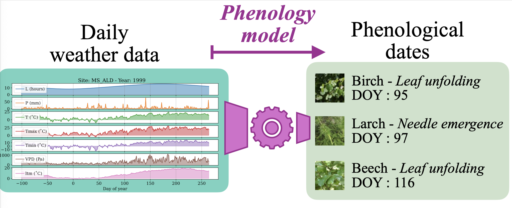
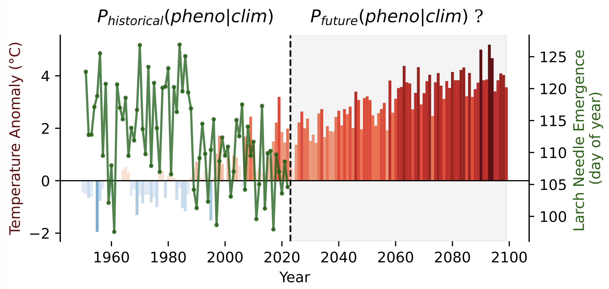
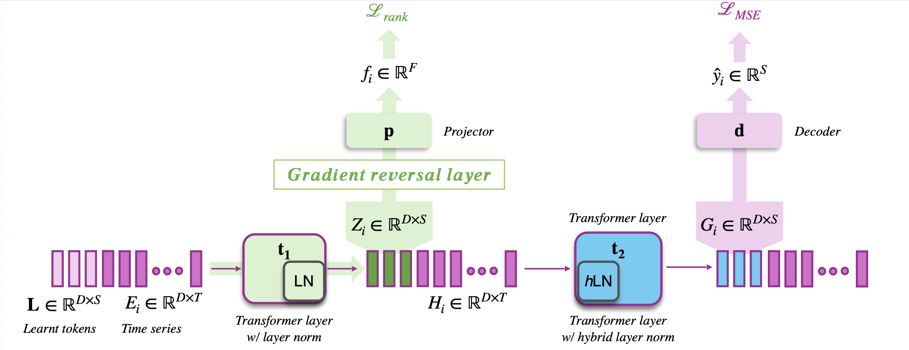
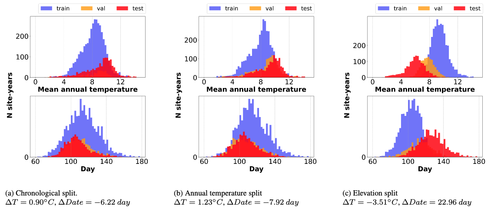

Plant phenology modelling aims to predict the timing of seasonal phases, such as leaf-out or flowering, from meteorological time series. Reliable predictions are crucial for anticipating ecosystem responses to climate change. While phenology modelling has traditionally relied on mechanistic approaches, deep learning methods have recently been proposed as flexible, data-driven alternatives with often superior performance. However, mechanistic models tend to outperform deep networks when data distribution shifts are induced by climate change. Domain Adaptation (DA) techniques could help address this limitation. Yet, unlike standard DA settings, climate change induces a tem- poral continuum of domains and involves both a covariate and label shift, with warmer records and earlier start of spring. To tackle this challenge, we introduce Mid-feature Rank-adversarial Domain Adaptation (MIRANDA). Whereas conventional adversarial methods enforce domain invariance on final latent representations, an approach that does not explicitly address label shift, we apply adversarial regularization to intermediate features. Moreover, instead of a binary domain-classification objective, we employ a rank-based objective that enforces year-invariance in the learned meteorological representations. On a country-scale dataset spanning 70 years and comprising 67,800 phenological observations of 5 tree species, we demonstrate that, unlike conventional DA approaches, MIRANDA improves robustness to climatic distribution shifts and narrows the performance gap with mechanistic models.



Our framework addresses domain shifts in phenology modelling via two key components:
rank-based adversarial training on intermediate features and hybrid layer normalization
Purple elements correspond to the main phenology prediction pathway: the learnable tokens L are concatenated with the input time series Ei and processed by two transformer encoder layers (t1 and t2). The resulting global embeddings of the learnable tokens, denoted as Gi, are then fed into the decoder d to predict the target date using the regression loss LMSE. We apply rank-based adversarial learning on the mid-level features Zi (green), where a discriminator p is trained with a ranking loss Lrank through a gradient reversal layer to encourage domain-invariant mid-level features. Meanwhile, we replace the standard layer normalization in t2 with our hybrid layer normalization (blue), which preserves domain-dependent variations in high-level representations.

@article{jiang2026miranda,
title={MIRANDA: MId-feature RANk-adversarial Domain Adaptation toward climate change-robust ecological forecasting with deep learning},
author={Jiang, Yuchang and Wegner, Jan Dirk and Garnot, Vivien Sainte Fare},
journal={Proceedings of the IEEE/CVF Conference on Computer Vision and Pattern Recognition Workshops},
year={2026},
}